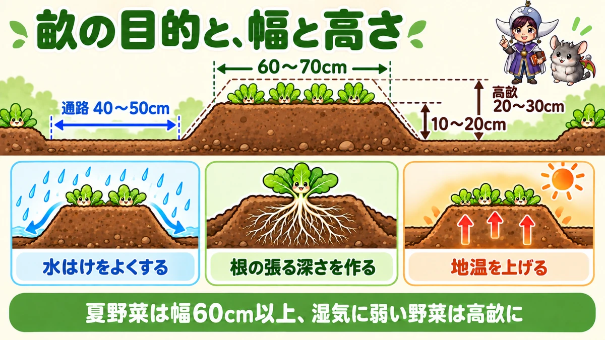
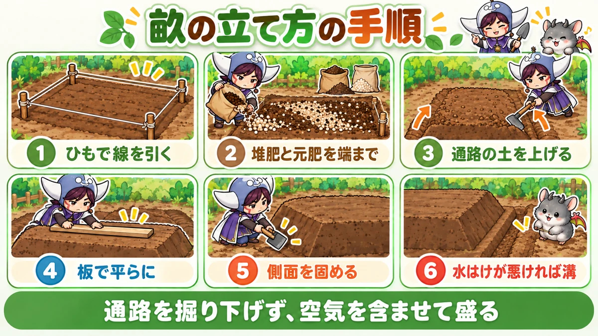

畝の立て方の決定版｜幅・高さの目安、高畝と平畝の使い分け、まっすぐきれいに作る手順とマルチの張り方
📖 この記事の目次
この記事で分かること
- 畝（うね）は、野菜を植えるために土を盛り上げて作る、細長いベッドのような場所です。まわりの低いところは通路になります。
- 畝を立てる目的は、水はけをよくする、根の張る土の深さ（作土層）を作る、地温を上げる、の3つです。
- 家庭菜園の畝は、幅60〜70cm、高さ10〜20cmくらいが基本の目安です。夏野菜は幅60cmほどあると安心です。
- 水はけの悪い畑や、雨の多い時期、大根やにんじんなど根を深く伸ばす野菜、湿気に弱いさつまいもや玉ねぎは、20〜30cmほどの高畝にします。
- きれいな畝は、ひもで線を引き、通路の土を畝に上げ、板で表面を平らにならすと作れます。
- マルチを張るなら、暖かい日の午前中に、しわがないようにぴんと張り、すそを土でしっかり埋めます。
畑を借りて、いざ野菜を植えようとしたとき、まず迷うのが畝の作り方です。幅はどのくらい？高さは？まっすぐに作れない、作ったそばから崩れる、雨のあとに水たまりができてしまう。畝作りは、野菜作りの土台なのに、意外と教わる機会の少ない作業です。
この記事では、畝を立てる目的から、幅と高さの目安、野菜ごとの高さ、まっすぐきれいに立てる手順、溝の切り方、マルチの張り方、ぬかるむ畑での高畝まで、順番に書いていきます。
早見：畝の基本の目安
幅
- 基本：60〜70cm
- 夏野菜（トマト、なす、きゅうりなど）：60cm以上。根が広く張るので、狭くしない
- さつまいも：底の幅50cmほどの、細長い畝
- かぼちゃ、すいか：つるが伸びるので、畝と通路を合わせて広めに
高さ
- ふつうの畝（平畝に近い）：10cmほど
- 基本：15〜20cm
- 高畝：20〜30cm（水はけの悪い畑、雨の多い時期、大根、にんじん、さつまいも、玉ねぎなど）
長さ
畑の広さに合わせて自由に決めます。家庭菜園の区画では、160cmくらいの短い畝を作ることも多いでしょう。長い畝は、ひもを張って、まっすぐに作ります。
通路
畝と畝のあいだの通路は、人が歩いて作業できる幅（40〜50cmほど）をとります。土寄せをする野菜は、寄せる土が足りるよう、通路を広めにとっておきます。

畝を立てる目的
1. 水はけをよくする
土を盛り上げると、雨の水は畝の上にたまらず、まわりの低い通路へ流れていきます。根のまわりが水びたしにならないので、根腐れや病気を防げます。
2. 根の張る土の深さを作る
野菜の根が伸びる、やわらかい土の層を「作土層（さくどそう）」と言います。畑の土がかたく、やわらかい層が浅い場合でも、上に土を盛れば、そのぶん根の張る深さを確保できます。大根やにんじんのように、根をまっすぐ深く伸ばす野菜には、特に大切です。
3. 地温を上げる
盛り上げた畝は、日の当たる面が広くなるので、土が温まりやすくなります。春先や秋の涼しい時期に、野菜の育ちを助けます。
4. 作業をしやすくする
畝と通路が分かれていると、どこに野菜が植わっているか分かりやすく、通路を歩いて作業できるので、畝の土を踏み固めずにすみます。
畝作りの道具
くわ
- 平ぐわ：刃が平らな、いちばん基本のくわ。土を盛る、ならす、溝を切る、と何にでも使えます
- 三本ぐわ（備中ぐわ）：刃が3本に分かれたくわ。かたい土を掘り起こしたり、かたまりをくだいたりするのに向いています
- 立ち鎌（三角ぐわ）：刃が小さく細い、軽いくわ。株のまわりの細かい作業や、溝切りに便利です
スコップ
土を深く掘り起こすのに使います。先がとがった剣先スコップが、土に刺さりやすく便利です。
ひもと杭
畝の位置を決めるのに使います。棒やマルチ押さえのピン、割りばしなどでも代用できます。
板（レーキ、トンボ）
畝の上を平らにならすのに使います。ベニヤ板の切れ端でも十分です。土を平らにするための、トンボやレーキという道具もあります。
メジャー
畝の幅や高さ、株と株のあいだを測ります。くわの柄に目盛りの印をつけておくと、いちいちメジャーを出さなくても測れて便利です。
区画の割り方
畝1本に必要な幅を考える
畝1本に必要な幅は、「畝の幅＋通路の幅」です。畝の幅60cm、通路40cmなら、畝1本あたり1mの幅が必要です。区画の幅を1mで割ると、何本の畝が作れるかの目安になります。
どの野菜をどこに植えるか
- 背の高くなる野菜（トマト、きゅうり、とうもろこしなど）は、ほかの野菜の日陰にならないよう、区画の北側に置きます
- つるが伸びる野菜（かぼちゃ、すいかなど）は、区画の端に置いて、つるを外へ逃がせるようにします
- 同じなかまの野菜を、前の年と同じ場所に植えないよう、場所を入れかえます
紙に書いてから作る
区画の大きさを測り、紙に畝の配置を書いてから作業すると、あとで「畝が1本足りない」「通路が狭くて歩けない」といった失敗を防げます。何を植えたかを記録しておけば、次の年の作付けにも役立ちます。
畝を立てる前に
深く耕しておく
畝を立てる前に、スコップで30cmほどの深さまで土を掘り起こして、かたまりをくだいておきます。三本鍬（備中鍬）を使うと、スコップより細かく耕せます。土づくりの段階で深く耕しておくと、畝を立てるときは、肥料を混ぜる程度の浅い耕しですみます。
石や前の野菜の根を取る
耕しながら、石や、前に育てた野菜の太い根、草の根などを取り除きます。
堆肥と元肥を入れる
畝を立てる場所に、堆肥と元肥をまきます。畝の中央にだけ集めず、畝の端まで均一にまきます。野菜の根は、植えて1か月もすると畝の端まで伸びていくからです。肥料を入れたら、植えつけまで2週間ほどおいて、土をなじませます。
耕したところを踏まない
せっかく耕してふかふかにした土の上を歩くと、そこだけ土が固まってしまいます。耕したあとは、畝になる場所に乗らないように作業します。
畝の立て方の手順
1. ひもで線を引く
畝を作る場所の四すみに、棒やマルチ押さえなどを立てて目印にし、ひもを張ります。ひもにそって作れば、まっすぐな畝になります。長い畝ほど、ひもがあると仕上がりがちがいます。
2. 元肥を混ぜる
畝の範囲にまいた元肥を、くわで土と混ぜます。深さ10〜15cmくらいで十分です。畝をまたいで立ち、畝の上に乗らないようにして作業します。
3. 通路の土を畝に上げる
通路になる部分の土を、くわですくって、畝の上に盛っていきます。両側の通路から、交互に土を上げていくと、片寄らずに高くなります。
4. 高さをそろえる
畝の高さが、目標の高さ（10〜20cm、高畝なら20〜30cm）になるまで、土を盛ります。
5. 板で平らにならす
板（ベニヤの切れ端や木の板など）を使って、畝の上を平らにならします。表面がでこぼこだと、くぼみに水がたまったり、マルチがきれいに張れなかったりします。かたまりがあれば、くだくか土の中に埋めます。
6. 側面を固める
畝の側面を、くわの背や板で軽くたたいて固めます。雨で崩れにくくなります。
7. 必要なら溝を切る
水はけの悪い畑では、畝のまわりの通路に、深さ10cmほどの溝を切っておきます。お堀を作るような形で、畝のまわりをぐるりと囲みます。大雨のときに、水が畝の中にしみこみにくくなります。

タネをまく畝の仕上げ
表面の土は細かく
苗を植える畝は、表面に多少かたまりがあってもかまいませんが、タネを直接まく畝は、表面の土を細かくくだいて、平らにならしておきます。かたまりがあると、タネが土にうまくふれず、芽が出にくくなります。
少し湿らせておく
土がからからに乾いているときは、タネをまく前日に水をまいて、土を湿らせておくと、芽がそろいやすくなります。
まき溝をつける
すじまきする場合は、板の角などを押しあてて、まっすぐな浅い溝をつけます。溝の深さがそろっていると、芽の出方もそろいます。
平畝の作り方
平畝とは
まわりとほとんど高さを変えずに、平らに作る畝を平畝と言います。水はけのよい畑や、乾きやすい時期、湿り気を好む野菜に向いています。
作り方
- 耕した場所に、畝の範囲をひもで決めます
- 元肥を混ぜ、表面を平らにならします
- 畝のまわりを軽く踏んで、通路との境目を分かるようにします
高さはほとんどつけませんが、通路を踏み固めておくことで、畝の範囲がはっきりし、畝の中を踏まずにすみます。
あると便利な目印
くわの柄に目盛り
くわの柄に、10cmごとにテープやペンで印をつけておくと、畝の幅や株間を、くわを当てるだけで測れます。
ひもに結び目
ひもに、株間の長さごとに結び目をつけておくと、苗を植える位置を決めるときに便利です。
板に目盛り
畝をならす板に、幅の目盛りを書いておくと、ならしながら畝の幅を確かめられます。
高畝のこつ
土に空気を含ませて盛る
高畝を作ろうとして、通路を深く掘り下げて土を集めると、通路が溝のように深くなり、かえって水がたまりやすくなります。高畝は、土をくわでよくくだいて空気を含ませ、ふんわりさせて盛り上げるのがこつです。空気を含んだ土は、かさが2倍ほどに増えるので、通路を深く掘らなくても、自然と高い畝になります。
高畝の上は平らに
高畝の上がまるく盛り上がっていると、雨の水が両側へ流れ落ちて、畝の中までしみこみにくくなります。マルチを張らない場合や、タネをまく場合は、上を平らにならしておくと、水がほどよくしみこみます。反対に、さつまいものように湿気を嫌う野菜は、上を少しまるくして、水が流れやすくしてもかまいません。
一度に高くしない
一度に高く盛ると、崩れやすくなります。何回かに分けて土を上げ、そのつど軽く押さえながら高くしていきます。
高畝は乾きやすい
高畝は水はけがよいぶん、乾きやすくなります。夏の乾く時期は、マルチを張ったり、通路に水をまいたりして、乾きすぎないようにします。
畑の土に合わせた畝
粘土っぽい畑
水がしみこみにくく、雨のあとにぬかるみやすい畑です。畝は高めにし、まわりに溝を切ります。堆肥やもみ殻などを入れて、少しずつ水はけのよい土にしていきます。
砂っぽい畑
水はけがよすぎて、乾きやすい畑です。畝は低めにし、堆肥を入れて、水持ちのよい土にしていきます。乾燥を防ぐために、マルチや敷きわらが役立ちます。
もと田んぼの畑
地下の水の位置が高く、雨が続くと水がしみ出してくることがあります。高畝にし、まわりの溝を深めにして、水の逃げ道を作ります。
雨の当たり方
畑の中でも、低くなっている場所は水がたまりやすく、高い場所は乾きやすくなります。雨のあとにどこに水がたまるかを見ておき、水がたまりやすい場所は高畝に、乾きやすい場所は低めの畝にします。
野菜ごとの畝の目安
トマト、なす、ピーマン、きゅうり
栽培期間が長く、根も広く張るので、幅60cm以上の畝にします。株と株のあいだは50〜60cmほどとります。高さは15cmほど。マルチを張ることが多い野菜です。
大根、にんじん、ごぼう
根をまっすぐ深く伸ばすので、20cmほどの高畝にします。畝の中に、石やかたいかたまりがないよう、よくくだいておきます。根が分かれたり曲がったりするのを防げます。
さつまいも
乾燥には強く、湿気にとても弱い野菜です。底の幅50cm、上の幅30cm、高さ20〜30cmほどの、細長い台形の高畝にします。幅を細くすることで、乾きやすく、通気もよくなり、芋がよく育ちます。高く作るのが難しければ、20cmほどでもかまいません。
じゃがいも
芋が土の中で太るので、ある程度の土の厚さが必要です。マルチを張って土寄せをしない場合は、最低でも15cmほどの高さの畝にします。種芋が腐るのを防ぐため、水はけもよくしておきます。
玉ねぎ
春の長雨のあとに、べと病が出やすい野菜です。べと病を防ぐには、水はけをよくすることがいちばんなので、20〜30cmの高畝にします。畝の上がでこぼこだと水たまりができるので、平らにていねいにならします。
えだまめ、いんげん、落花生
湿気に比較的弱い豆のなかまは、ふつうからやや高めの畝にします。落花生は、花のあとに柄が土にもぐってさやができるので、畝の表面の土をやわらかく保っておきます。
そら豆、えんどう
冬を越す豆のなかまは、冬のあいだの雨で根が傷まないよう、水はけのよい畝にします。
キャベツ、白菜、ブロッコリーなど秋冬野菜
秋は台風や大雨が多いので、春夏よりやや高めの畝にすると安心です。
小松菜、ほうれん草など葉物
育つ期間が短く、根も浅いので、高さ10〜15cmほどのふつうの畝で十分です。水はけの悪い畑では、少し高めにします。
里芋、しょうが
湿り気を好む野菜です。高畝にしすぎると乾きやすくなるので、ふつうの高さの畝にします。

マルチを張るか、張らないか
マルチの良いところ
- 土の湿り気を一定に保ち、乾燥と急な吸水の差を小さくする
- 黒いマルチなら、地温を上げ、草を抑える
- 雨の泥はねを防ぎ、病気の予防になる
- 土が雨でたたかれて固まるのを防ぐ
- コガネムシなどが土に卵を産むのを防ぐ
マルチがいらない、または向かない場合
- 土寄せをする野菜（ねぎ、里芋の後半など）
- 暑い時期の黒いマルチは、地温が上がりすぎることがある
- 湿り気を好み、乾燥に弱い野菜で、こまめに水をやる場合
マルチの色
- 黒：いちばんよく使われる。地温を上げ、草を抑える
- 透明：地温を上げる力がいちばん強い。草は生えやすい
- 白や銀色：地温を上げにくく、夏の地温上昇を抑える。銀色は、反射でアブラムシなどを寄せにくくする
穴あきマルチ
玉ねぎなど、たくさんの苗を同じ間隔で植える野菜には、あらかじめ穴のあいたマルチが便利です。株間に合わせた穴の間隔のものを選びます。
マルチの張り方
暖かい日の午前中に
マルチ（畝の表面をおおうビニール）は、暖かい日の午前中に張ります。暖かいとビニールが伸びた状態になるので、その状態で張ると、冷えて縮んだときにぴんと張ります。寒い時間に張ると、暖かくなったときに伸びてたるんでしまいます。
手順
- 畝の両側のすそ（マルチを埋める部分）に、浅い溝を掘っておきます
- マルチの中心線（色の線が入っているものは、その線）が、畝の中央にくるように広げます
- 畝の端で、マルチの端を土で埋めて固定します
- マルチを少しずつ引っぱりながら、しわを伸ばして広げていきます
- 片足でマルチのすそを押さえ、もう片方の足やくわで、すそに土をかぶせて踏み固めます
- ところどころをマルチ押さえのピンでとめます
植え穴のあけ方
マルチを張ったら、苗を植える位置に、マルチ専用の穴あけ道具や、空き缶のふちなどで、丸い穴をあけます。穴の大きさは、苗のポットより少し大きいくらいにします。大きすぎると、穴から草が生えやすくなり、マルチの効果も落ちます。
ぴんと張る理由
マルチが畝の表面にぴったりついていると、風が入りこんでばたつくことがなく、地温を上げる効果や、草を抑える効果がしっかり出ます。すき間があると、風であおられたり、すそから虫が入りこんだりします。
すそはしっかり埋める
マルチのすその埋め方が少ないと、強い風で飛ばされたり、すき間から虫の幼虫が入りこんだりします。土をしっかりかぶせて、足で踏み固めます。
ぬかるむ畑の高畝
溝を切っても水が抜けない畑
雨のたびに水たまりができ、溝を切ってもなかなか水が抜けない畑があります。こうした畑では、畝の周囲をあぜ板（あぜ波シート）などで囲み、その中に土や堆肥を高く盛り上げて、底上げした畝（レイズドベッド）を作る方法があります。
中に入れるもの
囲いの中には、もとの畑の土に加えて、バーク堆肥や、もみ殻、腐葉土など、水はけをよくする材料を混ぜて入れます。もみ殻は、特に水はけをよくするのに役立ちます。よく混ぜてから、しばらく寝かせて土をなじませてから植えます。
木枠で畝を作る
木の板で、畝の大きさの枠を作り、その中に土を入れて形を整えると、慣れない人でも、まっすぐできれいな畝が作れます。土を入れたら、まわりを軽く押さえてから枠を抜き取ります。庭先などでは、枠をそのまま残しておいてもかまいません。肥料が流れ出しにくい、という良さもあります。
畝を立てながら虫を探す
土の中の害虫
畝を作るために土を掘り起こすと、コガネムシの幼虫やヨトウムシ、ネキリムシなど、土の中で冬を越している害虫が出てくることがあります。植えつけたあとに苗の根を食べられないよう、見つけたら取り除きます。
前の野菜のマルチをはがしたとき
前の作付けで使ったマルチをはがすと、その下に虫がひそんでいることがよくあります。はがしたら、土の表面を軽くほぐして、虫がいないかを確かめます。
味方の虫は残す
土の中から、足のない白い幼虫や、黒くつやのあるゴミムシ、ミミズなどが出てきたら、それはほかの虫を食べてくれたり、土をよくしてくれたりする味方です。畑に戻しておきます。
植え穴に肥料を入れる方法
穴施肥とは
畝全体に元肥を混ぜる時間がないときは、苗を植える場所にだけ深さ20cmほどの穴を掘り、その底に肥料を入れて土をかぶせ、その上に苗を植える方法（穴施肥）もあります。
注意すること
穴施肥は、畝全体に肥料を混ぜる方法にくらべると、はじめの育ちがやや劣ります。肥料が根に直接ふれないよう、肥料の上に土をしっかりかぶせてから植えます。できるだけ、植えつけの2週間以上前に畝全体に元肥を混ぜておく方法をとります。
畝作りが遅れたときの溝施肥
秋冬野菜の植えつけが近いのに、土づくりが間に合わなかったときは、畝の中央に深さ20〜30cmほどの溝を掘り、そこに堆肥と肥料を入れて土と混ぜ、掘った土を埋め戻して畝を作る方法（溝施肥）があります。肥料が中央の深いところにあるので、苗は畝の中央に植えます。植えつけの時期を逃さないことを優先したいときの、緊急の方法です。
畝の手入れ
雨のあとの点検
大雨のあとは、畝の側面が崩れていないか、通路に水がたまっていないか、マルチがはがれていないかを見回ります。崩れたところは、晴れて土がほどよく乾いてから、通路の土を寄せて直します。水がたまりやすい場所は、溝を深くするか、次の作付けで畝を高くします。
通路の土をほぐす
雨や人の足で通路の土が固まると、水が抜けにくくなります。晴れた日に、通路にスコップを深くさして、少しゆすって土をほぐすと、空気が入り、水も抜けやすくなります。
マルチの穴
植え穴のまわりから、マルチが破れて広がってくることがあります。破れが大きくなったら、土をのせて押さえます。植え穴から生えてくる草は、小さいうちに抜きます。
収穫が終わったら
収穫が終わったら、残った株や根、マルチを片づけます。次の作付けまで期間があるなら、土を深く耕して、寒さや日光にさらしておきます。次に植える野菜に合わせて、堆肥と元肥を入れ、畝を立て直します。
苗を植える位置
畝の中央に
基本は、畝の中央に1列に植えます。畝の幅が広い場合は、2列に植えることもあります。2列に植えるときは、株と株がたがいちがいになるように植えると、葉が重なりにくくなります。
ネットを張る野菜は
きゅうりなど、畝の片側にネットを張って誘引する野菜は、ネット側に少し寄せて植えると、あとの誘引がしやすくなります。
株と株のあいだ
野菜ごとに、株と株のあいだ（株間）の目安があります。夏野菜は50〜60cm、キャベツや白菜、ブロッコリーは40〜45cm、葉物はタネまきのあと間引いて調整します。畝を作る前に、何株植えるかを考えて、畝の長さを決めておくと、むだがありません。
通路の管理
通路の幅をそろえる
通路の幅がまちまちだと、狭いところでは作業しにくく、広いところでは土がもったいなくなります。ひもを張って畝を作れば、通路の幅も自然とそろいます。
防草シート
通路に防草シートを敷くと、草が生えにくくなり、草取りの手間が大きく減ります。雨のあとのぬかるみも減り、歩きやすくなります。さつまいもなど、つるが伸びる野菜は、つるが通路の草にからむのも防げます。
わらや刈った草を敷く
通路にわらや刈った草を敷く方法もあります。草を抑え、泥はねを防ぎ、やがて分解されて土に返ります。ただ、厚く敷きすぎると、ナメクジやダンゴムシのすみかになることもあります。
通路も耕しておく
土寄せをする野菜の通路は、寄せる土になります。通路の土もやわらかくしておくと、土寄せがしやすくなります。
畝作りの手順をまとめると
- 区画を測り、畝の配置を紙に書く
- スコップで30cmほど掘り起こし、石や根を取る
- 堆肥と元肥を畝になる場所に均一にまく（石灰が必要なら、先に入れて2〜3週間おく）
- ひもを張って、畝の範囲を決める
- 元肥を土と混ぜる。畝の上には乗らない
- 通路の土を、空気を含ませながら畝に上げる
- 目標の高さまで盛り、板で平らにならす
- 側面を固め、必要なら通路に溝を切る
- マルチを張るなら、暖かい日の午前中に
- 2週間ほどおいて、土がなじんでから植えつける
はじめは時間がかかっても、何回か作るうちに、手順が体に入ってきます。
季節ごとにやること（一般的な地域の目安）
- 2〜3月：じゃがいもの畝作り。春夏野菜の土づくりを始める
- 3〜4月：夏野菜の畝作りとマルチ張り（植えつけの2週間ほど前）
- 4〜5月：さつまいもの高畝作り
- 8〜9月：秋冬野菜の畝作り。台風や大雨に備えて、やや高めに
- 10〜11月：玉ねぎの高畝作り。そら豆、えんどうの畝作り
- 大雨のあと：畝が崩れていないか、通路に水がたまっていないかを見回る
季節ごとの畝の考え方
春
春先はまだ地温が低いので、畝を立てて黒いマルチを張ると、地温が上がり、苗の根づきがよくなります。春の長雨に備えて、水はけもよくしておきます。
梅雨から夏
雨の多い時期は、水はけのよい畝が欠かせません。一方、梅雨が明けると今度は乾燥が問題になります。高畝は乾きやすいので、マルチや敷きわらで乾燥を防ぎます。
秋
台風や大雨が多い時期です。春夏よりやや高めの畝にして、大雨でも根のまわりに水がたまらないようにします。
冬
冬を越す野菜（玉ねぎ、にんにく、そら豆など）は、冬のあいだの雨や雪どけ水で根が傷まないよう、水はけのよい畝にします。霜柱で苗が浮かないよう、株元にもみ殻などを敷くのも役立ちます。
説明が分かれるところ
畝の向きは、南北か東西か
畝を南北に向けると、一日を通して畝の両側に日が当たり、育ちがそろいやすい、と言われます。一方で、東西に向けると、冬の低い日ざしを受けやすい、背の高い野菜を北側に植えれば影になりにくい、という考え方もあります。家庭菜園の区画では、区画の形に合わせて決めることも多いので、背の高い野菜が低い野菜の日陰にならないよう、植える場所を工夫すれば十分です。
高畝と平畝、どちらがよいか
水はけのよい畑や、乾きやすい季節、湿り気を好む野菜には、平畝に近い低めの畝が向いています。水はけの悪い畑や、雨の多い時期、湿気に弱い野菜には、高畝が向いています。畑の水はけと、野菜の性質で使い分けます。
よくある失敗
通路を深く掘って土を集め、溝に水がたまった
高畝は、通路を掘り下げるのではなく、土に空気を含ませて盛り上げます。
耕したところを踏んで、土が固まった
畝になる場所には乗らず、またいで作業します。
畝の中央にだけ肥料を入れた
はじめは育ちがよくても、根が伸びた先に栄養がなく、育ちが止まりやすくなります。畝の端まで均一にまきます。
表面がでこぼこで、水たまりができた
板で平らにならします。マルチもきれいに張れます。
寒い時間にマルチを張って、たるんだ
暖かい日の午前中に張ります。たるんだら、すそを少し掘り返して張り直します。
肥料を入れてすぐに苗を植えた
肥料が土になじむ前に植えると、根が傷むことがあります。肥料を入れたら、2週間ほどおいてから植えます。
ひもを張らずに長い畝を作って、曲がった
長い畝ほど、少しずつずれて曲がってしまいます。ひもを張って、それにそって作ります。
夏野菜の畝を狭く作った
根が広がれず、株が大きくならないことがあります。夏野菜は幅60cm以上にします。
よくある質問
畝は毎回作り直すのですか
野菜を植えかえるたびに、土を耕して堆肥や肥料を入れ、畝を立て直すのが基本です。続けて同じなかまの野菜を作らないよう、場所も入れかえます。
畝の高さは、どうやって測ればいいですか
通路の地面から、畝の上の面までの高さを、物差しやメジャーで測ります。慣れてくると、くわの刃の幅など、身近なものを目安にできるようになります。
くわが使いにくいです
くわは、手前に引くのではなく、上から振り下ろして土に打ちこみ、くだくように使います。肥料を混ぜるときも、手前に引くと、まいた肥料が片寄ってしまいます。
畝を立てるのに、どれくらい時間がかかりますか
区画の広さや土のかたさ、使う道具によって大きく変わります。はじめは短い畝1本でも思ったより時間がかかるものですが、手順に慣れてくると、ずっと早く作れるようになります。土がかたい畑では、掘り起こしの日と、畝を立てる日を分けると、体の負担も少なくなります。
通路にも何か敷いたほうがいいですか
通路に防草シートを敷くと、草が生えにくくなり、雨のあとのぬかるみも減ります。わらや刈った草を敷く方法もあります。
畝の高さを途中で変えられますか
植えたあとで畝を高くするのは難しいので、植える前に、育てる野菜と季節に合わせた高さにしておきます。植えたあとで水はけが悪いと感じたら、通路に溝を切ったり、通路の土をほぐしたりして対応します。
レイズドベッドの囲いは、何で作ればいいですか
あぜ板（あぜ波シート）や、木の板、レンガやブロックなどで囲います。木の板は、何年か使ううちに腐ってくるので、ときどき点検して取りかえます。
年配の方や力に自信のない方でも作れますか
スコップで深く掘る作業は力がいりますが、一度に全部やろうとせず、何日かに分けて少しずつ進めれば大丈夫です。木枠を使えば、くわで土を盛る力仕事も減らせます。小さな畝から始めて、慣れてきたら広げていくとよいでしょう。
畝が雨で崩れてしまいます
畝の側面を、くわの背や板でしっかりたたいて固めておくと、崩れにくくなります。マルチを張ると、雨が直接土をたたかないので、さらに崩れにくくなります。崩れたところは、晴れて土がほどよく乾いてから直します。
畝を立てずに植えてもいいですか
水はけのよい畑で、乾きやすい時期に、湿り気を好む野菜を育てるなら、畝を立てずに平らなまま植えることもできます。ただ、水はけの悪い畑や、雨の多い時期は、根腐れや病気が出やすくなるので、少しでも畝を立てたほうが安心です。
毎回、同じ場所に畝を立てていいですか
同じ場所で同じなかまの野菜を続けて作ると、連作障害が出やすくなります。畝の場所は同じでも、植える野菜のなかまを入れかえていきます。
プランターには畝はいりますか
プランターでは畝は必要ありません。かわりに、鉢底石を敷いて水はけをよくし、土の表面を平らにならしておきます。
学ぶ：畝と土のしくみ🔬
なぜ、盛り上げると水はけがよくなるのか
水は、高いところから低いところへ流れます。畝を盛り上げると、雨の水は畝の上から通路へと流れ、畝の中にたまりにくくなります。また、畝の中の土は、通路より高い位置にあるので、地面の下の水の層（地下水）から離れ、根のまわりが湿りすぎにくくなります。
なぜ、ふんわり盛ると高くなるのか
耕す前の土は、粒と粒がつまっていて、すき間が少ない状態です。くわでくだいて空気を含ませると、粒と粒のあいだにすき間ができ、同じ量の土でも、かさが大きく増えます。このすき間は、根が伸びる通り道や、水と空気の通り道にもなります。ふんわりした高畝は、根にとっても居心地のよい場所なのです。
なぜ、作土層が深いと野菜がよく育つのか
根は、やわらかい土の中では、まっすぐ深く伸びていきますが、かたい土にぶつかると、そこで横に曲がったり、伸びるのをやめたりします。作土層が深いと、根は深くまで伸びて、たくさんの水と養分を吸うことができます。深く伸びた根は、夏の乾燥にも強くなります。大根やにんじんが、かたい土で分かれたり曲がったりするのは、根の先がかたいところにぶつかって、向きを変えるからです。
なぜ、耕したところを踏んではいけないのか
人の体重は、足の裏の小さな面積に集中してかかるので、踏まれた土は強く押し固められます。せっかく作った土のすき間がつぶれ、水も空気も通りにくくなります。いちど固まった土は、雨が降るとさらに締まってしまいます。通路と畝を分けて、畝の上を歩かないようにするのは、根の育つ場所のすき間を守るためです。
なぜ、畝は地温が上がりやすいのか
平らな地面より、盛り上がった畝のほうが、日の当たる面積が広くなります。また、空気を含んだやわらかい土は、日に当たると温まりやすい性質があります。黒いマルチを張ると、日光を吸ってさらに地温が上がります。
まとめ
ここまで読んでくださって、ありがとうございます！
畝の立て方のポイントを、もう一度まとめておきます。
- 畝の目的は、水はけ、根の張る深さ、地温。作業もしやすくなる
- 基本は幅60〜70cm、高さ10〜20cm。高畝は20〜30cm
- 大根、にんじん、さつまいも、玉ねぎ、水はけの悪い畑は高畝に
- ひもで線を引き、通路の土を上げ、板で平らにならす。側面を固め、必要なら溝を切る
- 高畝は、通路を掘り下げず、土に空気を含ませて盛る
- マルチは暖かい日の午前中に、ぴんと張って、すそをしっかり埋める
- ぬかるむ畑は、囲いを作って底上げした畝に
次に畝を立てるときは、まずひもを1本張ってみてください。それだけで、まっすぐできれいな畝が、ぐっと作りやすくなります🌱
くわ
通路の土を畝に上げ、上から振り下ろして土をくだきます。空気を含ませて盛ると、通路を掘り下げなくても高畝になります。
![[商品価格に関しましては、リンクが作成された時点と現時点で情報が変更されている場合がございます。]](https://hbb.afl.rakuten.co.jp/hgb/56d752c3.3ce6fd3b.56d752c4.f8896826/?me_id=1209220&item_id=10002030&pc=https%3A%2F%2Fthumbnail.image.rakuten.co.jp%2F%400_mall%2Fhonmamon-r%2Fcabinet%2Fimg3%2Fw4580149745643.jpg%3F_ex%3D240x240&s=240x240&t=picttext "[商品価格に関しましては、リンクが作成された時点と現時点で情報が変更されている場合がございます。]")

黒マルチ
地温を上げ、草を抑え、泥はねを防ぎます。暖かい日の午前中に、ぴんと張ります。

マルチ押さえ
マルチのすそや中央をとめて、風でばたつくのを防ぎます。畝の位置決めの目印にも。

あわせて読みたい

次に読む
記事一覧へ